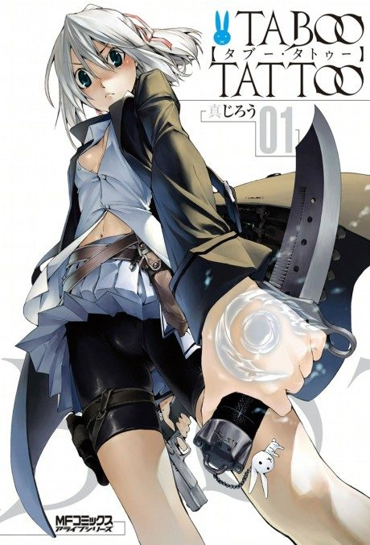

Taboo Tattoo
タブー・タトゥー
After the anime, read the manga from Chapter 45.
5.3AniList score
—Animeter, no votes yet
12episodes
Anime finished. Where does the manga pick up?
Start at Chapter45
The anime ends around chapter 44, so start at chapter 45 (volume 8). The manga is finished at 80 chapters.
14480 end
Season 1Start reading here